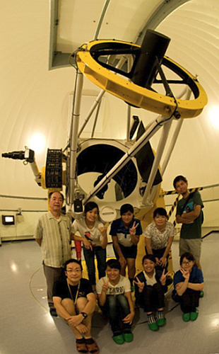
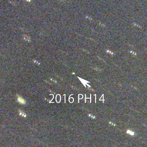

石垣島天文台で大学生が小惑星を発見
12月上旬に沖縄県の石垣島天文台で開催された大学生の研究体験企画「美ら星研究体験隊」で、新たな小惑星が発見された。
【2021年3月31日 石垣島天文台】
「美ら星（ちゅらぼし）研究体験隊」（略称「美ら研」）は、2005年から国立天文台が開催している高校生から大学生の研究体験企画だ。昨年は12月3日から5日にかけて、筑波大学天文研究会に所属する大学生6名が石垣島天文台の「むりかぶし望遠鏡」を使った観測を体験した。

むりかぶし望遠鏡と観測メンバー。中央の6名が美ら研に参加した筑波大学の学生（提供：国立天文台 石垣島天文台、以下同）
8月3日の観測で、これまでに見つかっていなかった天体が3つ発見された。そのうちの1つは翌4日以降も確認観測が行われ、天体の位置を知るために必要な軌道要素が確定したことから、国際天文学連合の小惑星センターによって「2016 PH14」の仮符号が付けられた。

小惑星2016 PH14
正式に新天体として認定され小惑星番号が付けられるには4年以上の観測が必要となる。現時点で仮符号のない残る2天体とともに、石垣島天文台ではこれらの新天体を継続観測していくとのことだ。
なお、これまでに「美ら研」では2008年に発見された小惑星2個が正式に認められており、「(333639) Yaima（八重山）」と「(372024) Ayapani（綾羽）」という名前が公募で命名されている。
〈参照〉
〈関連リンク〉
- 国立天文台 石垣島天文台： http://www.miz.nao.ac.jp/ishigaki/
- 国際天文学連合 小惑星センター： http://www.minorplanetcenter.net/
- アストロアーツ 星空ガイド： 天文の基礎知識 小惑星
〈関連ニュース〉
- 2013/08/28 - 高校生が発見した小惑星が正式認定
- 美ら星研究体験隊：
- 2010/09/01 - 高校生の体験学習「美ら星研究体験隊」、新しい電波星を発見
- 2008/10/30 - 高校生の天文研究体験学習「美ら星研究体験隊」の成果
- 2005/08/22 - 高校生天文研究体験学習「美ら星研究体験隊」が新しいメーザー源を発見
- 近年の小惑星発見と命名：
- 2015/10/05 - 探査機「はやぶさ2」が目指す小惑星の名前は「リュウグウ」
- 2015/02/05 - 小惑星に「じゃこ天」命名
- 2014/08/13 - 帰還と復興願い、小惑星「富岡町」命名式
- 2014/07/30 - 新命名の小惑星発表 日本の研究者や地名も
- 2013/08/06 - 故 森田耕一郎教授の名前が小惑星に
- 2013/05/02 - 米探査の小惑星は不死鳥「ベンヌ」 9歳少年が命名
- 2012/05/10 - 東北各地や長野県栄村など小惑星名に復興への願いこめて
- 2012/03/06 - 復興と鎮魂の星、小惑星「東北」誕生